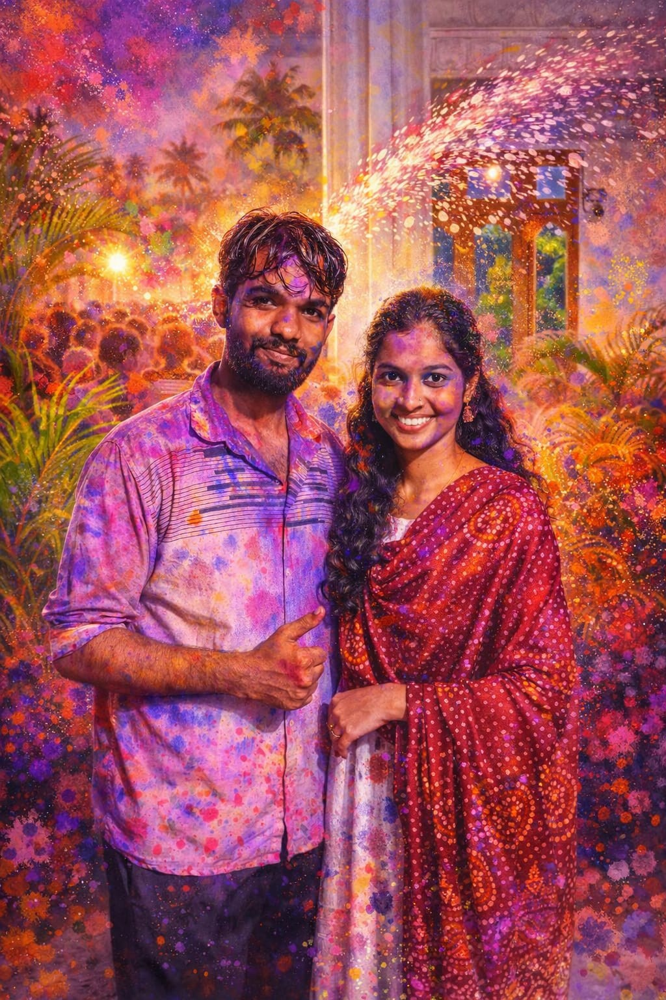
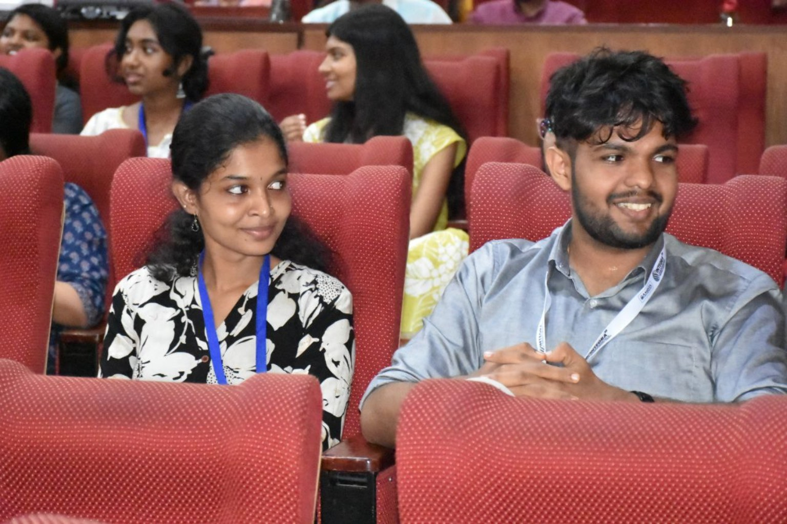
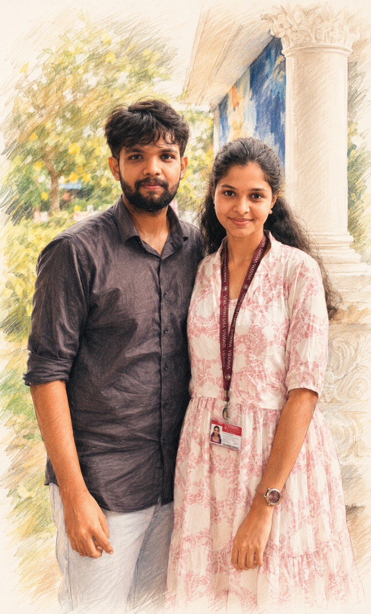

Holi was meant to be a celebration of colors.
Yet the most beautiful part of that day was simply having you there.
Whenever I think about that celebration, I don't remember the colors first.
I remember the happiness.

Life was busy.
Yet even between responsibilities and deadlines, you chose to spend a little time with me.
Those moments may have seemed small, but they meant more than you probably realized.

Some photographs capture faces.
Some capture memories.
This one reminds me of a chapter of life that became brighter because you were part of it.